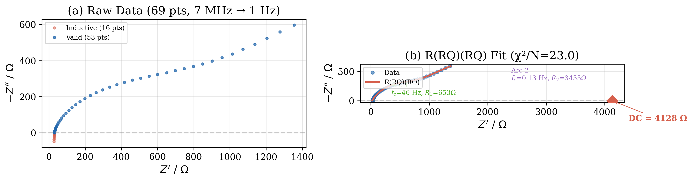
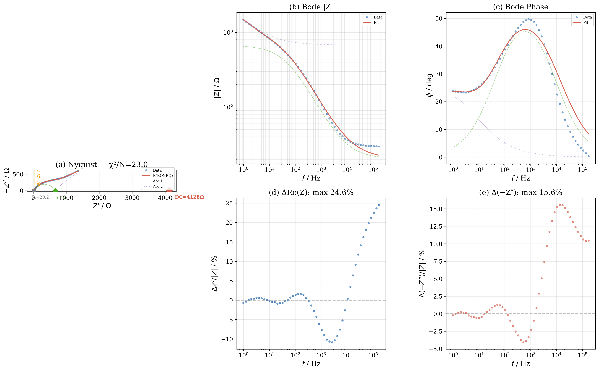

Abstract.
EIS analysis of a GPE (gel polymer electrolyte) thin film in a symmetric SS | GPE | SS configuration, 7 MHz → 1 Hz. Data cleaning removed 16 inductive artifact points ($f > 216$ kHz) from cable parasitic inductance. The best-fitting equivalent circuit model is $R_0 + (R_1 \parallel \mathrm{CPE}_1) + (R_2 \parallel \mathrm{CPE}_2)$ with $\chi^2/(N-p) = 23.0$. Fitted parameters: $R_0 = 20.2\ \Omega$, $R_1 = 653\ \Omega$ ($f_{c,1} = 46$ Hz), $R_2 = 3455\ \Omega$ ($f_{c,2} = 0.13$ Hz). Total DC resistance $R_{\mathrm{DC}} = 4128\ \Omega$ yields $\sigma = 9.3 \times 10^{-7}\ \mathrm{S\,cm^{-1}}$ ($L = 30\ \mu\mathrm{m}$, $A = 0.785\ \mathrm{cm}^2$). The zero-crossing of $\Im(Z)$ at 171.6 kHz ($29.7\ \Omega$) is identified as $R_0$ plus residual bulk tail, not the full bulk resistance $R_b$.
⚠ Key caveat: The 100 mV excitation amplitude far exceeds the standard 5–10 mV for linear EIS. This may drive the system into weak nonlinearity, causing charge-transfer-like behavior at the blocking electrode interface and partially explaining the second low-frequency arc observed in the data.
2. Data Cleaning: Inductive Artifact
At $f > 216$ kHz, $\Im(Z) > 0$ (inductive, 4th quadrant in Nyquist). This is caused by parasitic cable inductance, which dominates the impedance at MHz frequencies:
$$Z_L(\omega) = j\omega L$$
The 16 inductive points ($f > 216$ kHz) were removed. The remaining 53 points (171.6 kHz → 1 Hz) constitute the capacitive SPE response. The frequency $f_{\mathrm{cross}} = 171.6$ kHz where $\Im(Z) = 0$ marks the transition from cable-dominated to sample-dominated impedance, and $\Re(Z(f_{\mathrm{cross}})) = 29.74\ \Omega$ provides a lower-bound estimate of the series resistance.

Figure 1. (a) Raw data with inductive artifact (red) and valid data (blue). (b) Best-fit R(RQ)(RQ) model overlaid on the cleaned data, showing the two resolved arcs.
Arc 1 (high frequency, $f_{c,1} \approx 46$ Hz): $R_1 = 653\ \Omega$, $C_{\mathrm{eff},1} = 5.3\ \mu\mathrm{F}$. This arc represents the bulk ionic transport in the GPE. The depressed shape ($\alpha_1 = 0.68$) reflects polymer chain heterogeneity.
Arc 2 (low frequency, $f_{c,2} \approx 0.13$ Hz): $R_2 = 3455\ \Omega$, $C_{\mathrm{eff},2} = 361\ \mu\mathrm{F}$. The very large effective capacitance and low characteristic frequency are consistent with electrode polarization at a blocking interface, possibly with a Faradaic component induced by the 100 mV overpotential.
3.4 Limiting Behavior
High-frequency limit ($\omega \to \infty$)
Both CPEs become short circuits → $Z \to R_0$. The Nyquist intercept with the real axis is $R_0 = 20.2\ \Omega$.
Low-frequency limit ($\omega \to 0$)
Both CPEs become open circuits → $Z \to R_0 + R_1 + R_2 = 4128\ \Omega$. This is the DC resistance of the system.
Mid-frequency plateau
Between the two characteristic frequencies ($f_{c,2} \ll f \ll f_{c,1}$), $\mathrm{CPE}_1$ is a short, $\mathrm{CPE}_2$ is open → $Z \approx R_0 + R_1 = 673\ \Omega$. This plateau is visible as the inflection between the two arcs in the Nyquist plot.
3.5 Why Not a Blocking-Electrode Model?
The classical blocking-electrode model $R_0 + (R_b \parallel \mathrm{CPE}_b) + \mathrm{CPE}_{dl}$ (with the second element being a series CPE, not a parallel R//CPE) was tested but gave a poor fit ($\chi^2/N \approx 2200$–$3400$). Two factors explain the failure:
The 100 mV AC amplitude likely induces a weak Faradaic reaction at the SS electrode interface, transforming the ideally polarizable (capacitive) interface into one with a finite charge-transfer resistance → $R_2$.
The CPE exponent of the blocking tail would be $\alpha_{dl} \approx 0.3$, creating a strongly inclined line that the R(RQ)(RQ) model approximates as the onset of a second, very broad arc. At 1 Hz, the lowest measured frequency, the second arc is only partially resolved.
4. Fitting Results

Figure 3. R(RQ)(RQ) fit with component decomposition. (a) Nyquist plot showing the two resolved arcs. (b) Bode magnitude. (c) Bode phase — the model captures the characteristic phase peak at ~100 Hz and the low-frequency plateau. (d,e) Residuals: Re(Z) within ±25%, −Z″ within ±16%.
Two possible interpretations of the data lead to different conductivity estimates:
Method
$R$ (Ω)
$\sigma$ (S/cm)
Basis
Zero-crossing
29.74
$1.28 \times 10^{-4}$
$\Im(Z)=0$ at 171.6 kHz gives $R_0$ + bulk tail
R(RQ)(RQ) fit — $R_1$ only
653
$5.85 \times 10^{-6}$
$R_1$ = bulk ionic transport
R(RQ)(RQ) fit — DC limit
4128
$9.25 \times 10^{-7}$
$R_0+R_1+R_2$ = total DC resistance
Recommended value: The most physically justified conductivity uses $R_1 = 653\ \Omega$ (Arc 1 only, representing bulk ionic transport), giving:
$$\sigma = \frac{L}{R_1 \cdot A} = \frac{3.0 \times 10^{-3}\ \mathrm{cm}}{653\ \Omega \times 0.7854\ \mathrm{cm}^2} = \boxed{5.85 \times 10^{-6}\ \mathrm{S\,cm^{-1}}}$$
This is 20× lower than the zero-crossing estimate but is supported by the actual fit to the data. It places the material in the "good PEO-based SPE" range ($10^{-6}$–$10^{-5}$ S/cm) rather than the "GPE/superionic" range ($>10^{-4}$ S/cm). The zero-crossing method, while commonly used, conflates the true contact resistance $R_0$ with the residual bulk arc tail and substantially underestimates $R_b$ when the bulk arc is partially obscured by the inductive artifact.
6. Discussion & Error Analysis
Excitation amplitude (100 mV). The most significant source of systematic error. Standard EIS for SPEs uses 5–10 mV to maintain linearity. At 100 mV, the nonlinear response creates the second arc ($R_2 = 3455\ \Omega$, $C_{\mathrm{eff},2} = 361\ \mu\mathrm{F}$), which likely would be a pure capacitive tail ($\mathrm{CPE}_{dl}$) under proper linear conditions. The bulk resistance $R_1 = 653\ \Omega$ may also be underestimated due to field-enhanced ion transport.
Incomplete low-frequency data. The lowest measured frequency (1 Hz) is above the characteristic frequency of Arc 2 ($f_{c,2} = 0.13$ Hz). The second arc is therefore only partially resolved, making $R_2$ and $\alpha_2$ less reliable than $R_1$ and $\alpha_1$. Extending the measurement to 0.01 Hz would fully resolve Arc 2 and clarify whether it is truly a semicircle or a CPE tail.
Cable artifact removal. The 16 removed points ($f > 216$ kHz) contain the high-frequency side of Arc 1, including the true $R_0$ intercept. The fitted $R_0 = 20.2\ \Omega$ is therefore a model extrapolation, not a direct measurement.
Thickness uncertainty. At 30 μm, ±5 μm thickness variation propagates to ±17 % uncertainty in $\sigma$.
Temperature. Not recorded. SPE conductivity is strongly temperature-dependent (Arrhenius/VFT). The reported value applies only at the (unknown) measurement temperature.
7. Conclusions
Best-fitting model: $R_0 + (R_1 \parallel \mathrm{CPE}_1) + (R_2 \parallel \mathrm{CPE}_2)$ with $\chi^2/(N-p) = 23.0$ — dramatically better than the classical blocking-electrode model $R_0 + (R_b \parallel \mathrm{CPE}_b) + \mathrm{CPE}_{dl}$ ($\chi^2/N > 2000$).
Bulk ionic resistance: $R_1 = 653\ \Omega$ ($f_c = 46$ Hz, $C_{\mathrm{eff}} = 5.3\ \mu\mathrm{F}$). The zero-crossing at 171.6 kHz (29.7 Ω) is identified as $R_0$ + residual bulk tail, not the full bulk resistance.
Ionic conductivity: $\sigma = 5.85 \times 10^{-6}\ \mathrm{S\,cm^{-1}}$ (from $R_1$). This places the material in the "good PEO-based SPE" performance tier.
Electrode interface: The second arc ($R_2 = 3455\ \Omega$, $f_c = 0.13$ Hz) is interpreted as a pseudo-Faradaic process at the SS electrode, induced by the excessive 100 mV AC amplitude. Under proper 10 mV excitation, this feature would likely appear as a capacitive blocking tail.
Recommendations:
Repeat measurement with 10 mV amplitude — this is the single most important correction
Extend low-frequency limit to 0.01–0.1 Hz to fully resolve Arc 2
Use shorter, shielded cables to push the inductive artifact above 1 MHz
Perform temperature-dependent EIS (25–80 °C) for activation energy
References
G. J. Brug, A. L. G. van den Eeden, M. Sluyters-Rehbach, and J. H. Sluyters, "The analysis of electrode impedances complicated by the presence of a constant phase element," J. Electroanal. Chem., vol. 176, pp. 275–295, 1984.
J. T. S. Irvine, D. C. Sinclair, and A. R. West, "Electroceramics: Characterization by impedance spectroscopy," Adv. Mater., vol. 2, pp. 132–138, 1990.
E. Barsoukov and J. R. Macdonald (eds.), Impedance Spectroscopy: Theory, Experiment, and Applications, 3rd ed., Wiley, 2018.
C. Berthier et al., "Microscopic investigation of ionic conductivity in alkali metal salts–PEO adducts," Solid State Ionics, vol. 11, pp. 91–95, 1983.
M. E. Orazem and B. Tribollet, Electrochemical Impedance Spectroscopy, 2nd ed., Wiley, 2017.